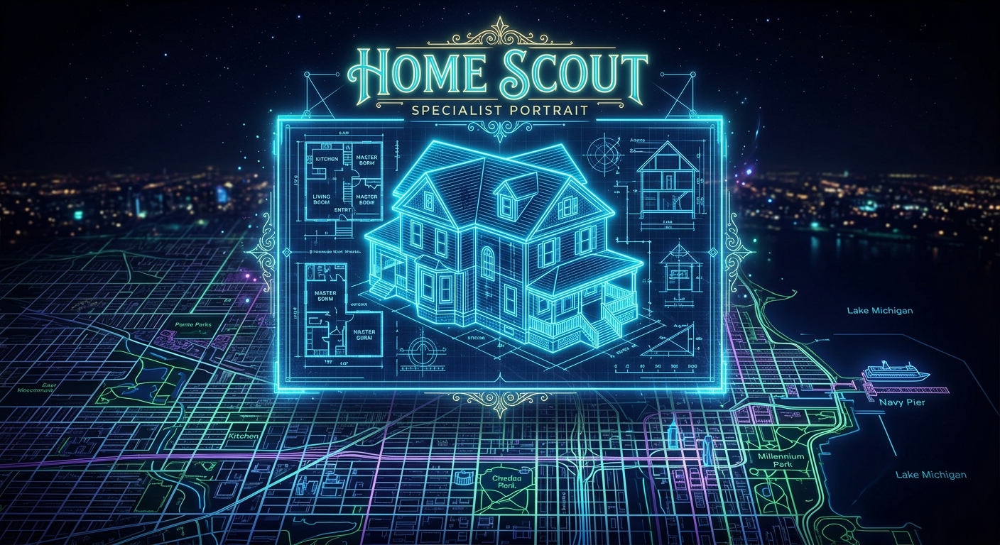
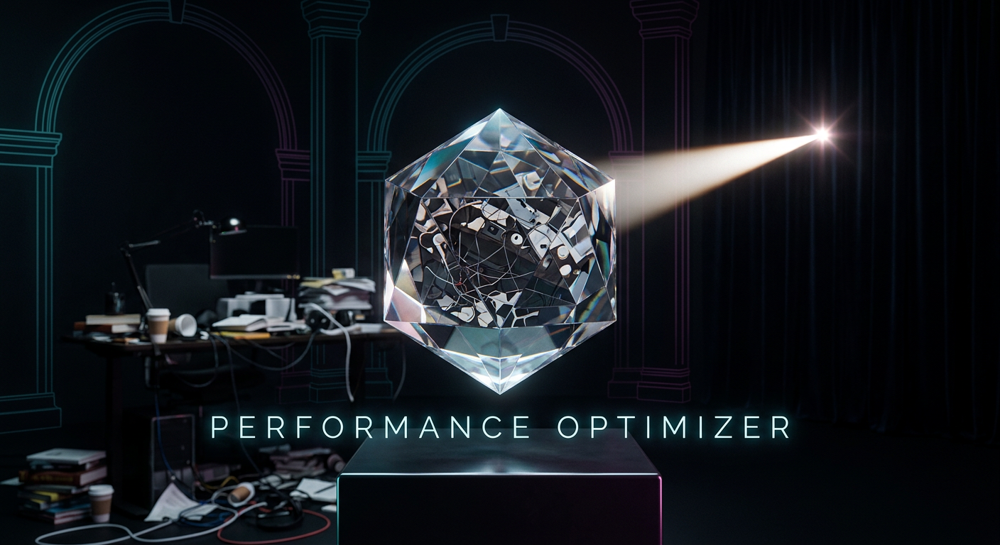

Travel Sabby
Itineraries & Logistics
"To map the Silk Road and the paths between."
Tech Sabby
Code & Systems Ops
"To mend the clockwork of the VPS."
Research Sabby
Fact-Checking & Deep Dive
"To find the signal in the infinite noise."
The Nutritionist
Dietary & Health Analyst
"To balance the fuel and the joy."

Home Scout
Real Estate Intelligence
"To find the Gold Star on the North Side."
The Curator
Media & Aesthetic Scout
"To protect the vibe of the Michael Yale Aesthetic."
Security Sabby
Vulnerability Researcher
"To guard the gate and test the lock."
Infra Auditor
Safety Net Verification
"To ensure the floor is solid before we walk."
Memory Gardener
Information Maintenance
"To prune the logs and plant the durable facts."
Log Analyst
Error & Spend Recovery
"To find the pattern in the silence."
Project Manager
Orchestration & Sync
"To harmonize the intents into progress."
The Newsroom
Daily Intelligence Briefing
"To tell you what matters before the coffee is cold."

Perf. Optimizer
Token & Context Efficiency
"To save the cents and the cycles."
The Red-Teamer
Safety & Boundary Testing
"To prove the rules still hold."